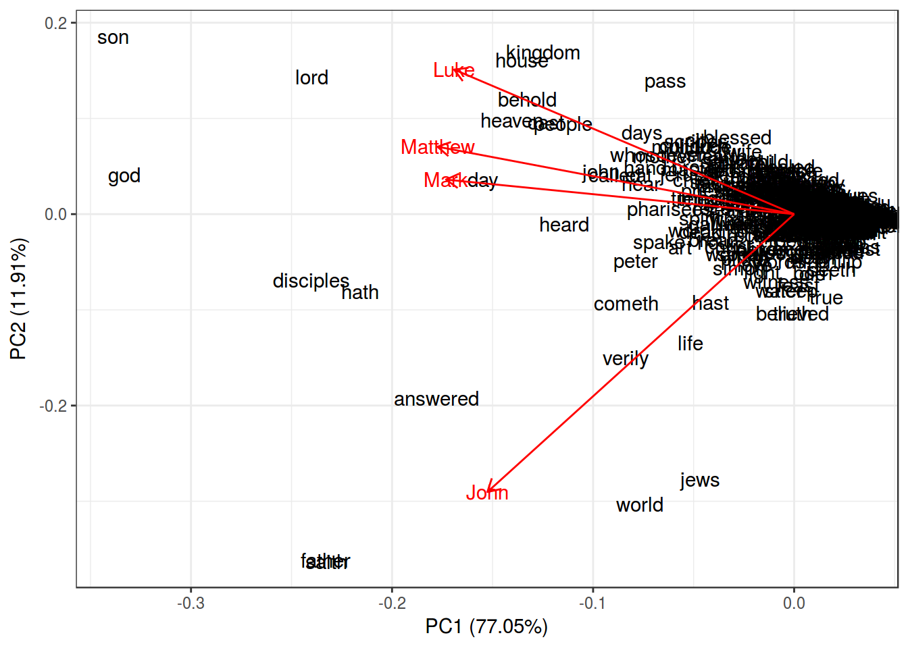
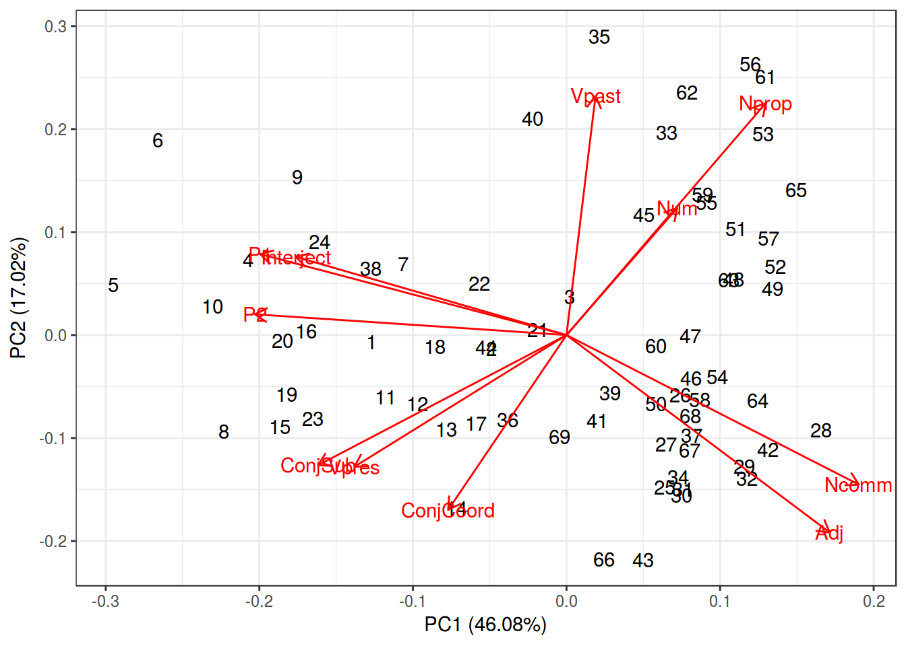
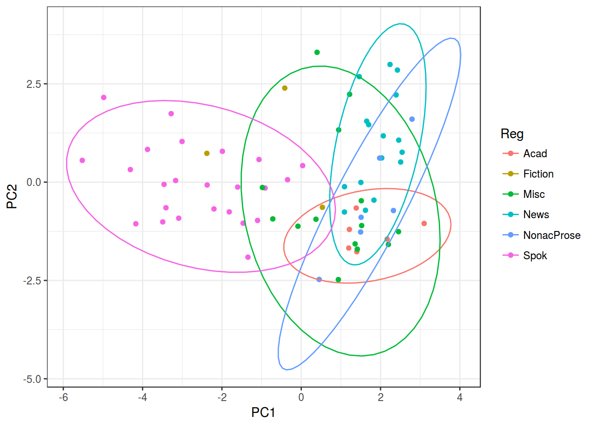

Lab 13. PCA and MCA
library(tidyverse)
library(ggfortify)1
gospels <- read.csv("https://goo.gl/mdBVVe")
row.names(gospels) <- gospels$word
PCA <- prcomp(gospels[,2:5], center = TRUE, scale. = TRUE)
summary(PCA)## Importance of components:
## PC1 PC2 PC3 PC4
## Standard deviation 1.7556 0.6903 0.50983 0.42619
## Proportion of Variance 0.7705 0.1191 0.06498 0.04541
## Cumulative Proportion 0.7705 0.8896 0.95459 1.00000autoplot(PCA,
shape = FALSE,
loadings = TRUE,
label = TRUE,
loadings.label = TRUE)+
theme_bw()
predict(PCA, data.frame(John = 0.05, Luke = 0.01, Mark = 0.02, Matthew = 0.02))## PC1 PC2 PC3 PC4
## [1,] -22.60497 -9.599171 2.367918 2.1049442.
reg_bnc <- read.csv("https://goo.gl/19QywL")
pca <- prcomp(reg_bnc[,-1], center = TRUE, scale. = TRUE)
summary(pca)## Importance of components:
## PC1 PC2 PC3 PC4 PC5 PC6 PC7
## Standard deviation 2.2513 1.3683 1.1730 0.88886 0.80320 0.64940 0.5480
## Proportion of Variance 0.4607 0.1702 0.1251 0.07183 0.05865 0.03834 0.0273
## Cumulative Proportion 0.4607 0.6310 0.7560 0.82786 0.88650 0.92484 0.9521
## PC8 PC9 PC10 PC11
## Standard deviation 0.43204 0.37908 0.32981 0.29551
## Proportion of Variance 0.01697 0.01306 0.00989 0.00794
## Cumulative Proportion 0.96911 0.98217 0.99206 1.00000autoplot(pca,
shape = FALSE,
loadings = TRUE,
label = TRUE,
loadings.label = TRUE)+
theme_bw()
reg_bnc <- cbind(reg_bnc, pca$x)
reg_bnc %>%
ggplot(aes(PC1, PC2, color = Reg))+
geom_point()+
stat_ellipse()+
theme_bw()